1 what it is
a voice-only concierge that lives on the hotel's website. a guest taps a mic and just talks — in German or English — and it answers like a receptionist: shows matching rooms as photo cards, checks live availability and prices, hands off a secure payment link, and when it can't help, points the guest straight to the team (phone + email on screen). it never makes anything up — every room, price and date comes from a live lookup in that same conversation.
- voice only — the mic is the only input; the panel just shows things (photo cards, captions, tappable contact buttons). no typing anywhere.
- German + English, automatic — it detects the guest's language each time and replies in it; no menu to pick.
- grounded — a wrong price is a real legal/business problem, so nothing about rooms/prices is ever invented.
2 how it works — and the current state
FALLBACK the proven HTTP capture loop (tap to talk, tap to send) engages automatically if the call can't connect — same agent, same tools on both paths.
- widget (
widget/widget.js) — floating mic + panel, one script tag, Shadow-DOM isolated, connects nothing until the mic is tapped. records the guest, sends audio to our backend, plays the spoken answer, renders room cards / payment rows / the team-contact card. on desktop the panel floats bottom-right over the page (see it); on phones (≤520px) opening it goes full-screen — chat filling the display, mic docked at the bottom (see it). - agent (the brain) (
server/agent.js) — Mistral with tool calling; receptionist persona only — it carries no hotel facts in memory (client decision 2026-07-06: every fact comes from a tool call in that turn, so every answer has verifiable provenance); speaks DE/EN, books, escalates. - MCP tools (
mcp/functions/— one file per ability, 8 registered) + a stdio MCP server (mcp/server.js) any MCP client can mount. - voice transport — LiveKit realtime call (SHIPPED 2026-07-08, build log:
livekit/PLAN.md): tap once → the widget joins a LiveKit room; the in-process agent session (livekit/agent-session.js) does server-side turn detection (silero VAD — never browser loudness, per client decision), hears via the same Voxtral, thinks with the same brain/tools, streams Linda back (ElevenLabs PCM streaming) and supports barge-in; captions/cards ride the data channel into the same panel renderers. measured: fact answers ~4.5–5.5 s from end of speech; barge-in stops Linda mid-sentence (§11 scenario 7). closing the panel ends the call — no mic behind a closed panel. while tools run she says so ("One moment please — let me see what's available…", DE/EN, cached filler audio = near-zero repeat cost), and a call auto-ends after 60 s without meaningful speech (only words that actually transcribe reset the clock — background noise doesn't; the check pauses while the guest is mid-sentence, words are being transcribed, tools run, or Linda speaks — waiting for a slow lookup can never hang up on you; saves LiveKit minutes + server compute). a second "thank you for your patience" filler lands at ~20 s of tool time. fallback: any connect failure drops silently to the proven HTTP tap-to-talk loop (17/17 record, artifacts in repo); greeting TTS pre-warmed at boot; long waits talk through the status line. zero new vendors: LiveKit is transport only (free tier), all AI stays on the existing keys. - sources of truth — booking engine (live prices via the WAF capture), marketing site (static facts in
hotel_information/), and for escalations the hotel's own phone/email presented to the guest (active staff alerts deferred — see §5).
{kind=link}
{kind=link}
server/prices.js, client decision 2026-07-07): the model may never write money digits — tools yield a numbered PRICE MENU and the model writes {{Pn}} markers that CODE replaces with the exact tool values; raw digits or an unknown marker are objective violations that swap the reply for a fixed "I can't confirm that — here is the team" + contact card (the older regex truth-checker is retired); (3) new abilities are added as new tools, so the product grows without rewrites. the panel itself cannot lie by construction: cards, prices, links and contact buttons are code-rendered from tool results only.3 the voice (locked stack)
- hears (STT): Voxtral (Mistral's EU transcription) — rides the same API key as the brain, one vendor fewer, DE/EN auto-detect. in call mode, silero VAD (free local model, server-side) closes each utterance and Voxtral transcribes it; the adapter (
server/stt.js) still allows a streaming STT later. - thinks (brain): Mistral (
mistral-large-latest) — good tool-calling + strong German, EU vendor. (Anthropic/Deepseek permanently off-limits per standing rule + GDPR.) - speaks (TTS): the shipping voice is "Linda — Friendly & Clear" (ElevenLabs) — a verified-native German library voice (de-DE) — live locally and on the deployed service (
ELEVENLABS_VOICE_ID=ZD3ZSPgXfFSWm3piBipz). standing rule: no non-native German voice ships. sample:voice_samples/linda-greeting.mp3. - opening line: "Hi, welcome to Park Hotel Konz — how can I help you today? … Sie können auch gerne Deutsch sprechen." — implemented (
/api/greeting, TTS cached), spoken by Linda, then she follows the guest's language. - quality bar: a real receptionist — natural, low latency; final German judged by native speakers (hotel staff), not by spec sheets.
4 the hotel data + booking engine (final)
Park Hotel Konz · Granastraße 26, 54329 Konz · info@parkhotel-konz.com · +49 6501 6037987.
- static facts (rooms, sizes, views, amenities, breakfast, parking, policies) are scraped from
parkhotel-konz.comintohotel_information/and structured (hotel_information/facts.json) — served exclusively through theget_hotel_infoMCP tool (client decision 2026-07-06: facts live behind MCP, not in the prompt, so every fact answer carries tool provenance; costs a tool hop ≈ 2–5 s on fact questions). 5 room types, 22 photos (hotel_information/rooms.md). - live availability, prices, booking come from the SiteMinder "Canvas" booking engine (
direct-book.com/…/parkhotelkonzdirect), wired into the app (mcp/lib/booking.js):- GraphQL
/api/graphql(roomTypes,quote,property);channelCode=parkhotelkonzdirect,propertyId=32494. - behind AWS WAF → reached through an Apify browser calling the API via the site's own
AwsWafIntegration.fetch. the app selects sensible rates per room in-browser, quotes each, and caches the capture 10 min per (dates × occupancy) (recipe + IDs:hotel_information/booking-engine-api.md). - example live result (Jul 24–26): €240.00 / 2 nights Comfort Double Room Plus (available), €182 Standard Double (sold out those dates).
- latency: a cold availability question costs 60–90 s (a real browser clears the WAF); warm-cache answers take ~8–17 s. swap path: SiteMinder API credentials later → direct server-side calls, killing the cold-start entirely — the swap lives inside
booking.js, the agent never notices.
- GraphQL
- payment link — guest pays on SiteMinder's own page (card data never in chat). implemented today as (a) the pre-filled deep-link (room + dates + occupancy, no reservation created by us); (b)
createReservation→ hosted-payredirectUrlstays the upgrade once API creds exist.
5 the MCP tools (8 registered, all complete)
what MCP is, and why we use it: MCP (Model Context Protocol) is a standard way to give an AI hands — each ability is a typed function ("tool") the model can call; the tool returns data, code renders it, and the model may only narrate what came back. why: grounding (every fact/price must arrive through a tool → nothing is invented), auditability (every call + payload is recorded as toolTrace — §11 shows them verbatim), and reuse (the same 8 tools serve the HTTP loop, the realtime call, and any external MCP client via node mcp/server.js). booking inputs are a structured contract (mcp/lib/booking-requirements.js): tool schemas, the prompt's asking-rules and the tool-boundary rejection are all generated from one file — party size can never be assumed (a code rail also rejects booking calls whose party size the guest never expressed). all 8 endpoints ✅ complete:
search_rooms — live availability + prices for a stay (booking engine)
- holds/does: nothing static — every call runs a live SiteMinder capture (10-min cache): per room → available?, units left,
fitsParty, live total + per-night rates (feeding the price menu), photos/amenities merged from the scraped data; renders the room cards. - when the AI calls it: open-ended availability/booking asks ("what's free…?") — but only AFTER the guest stated dates + party size (schema requires them; the tool rejects calls without them).
- example: guest: "what's available Jul 24–26 for 2 adults?" →
search_rooms(check_in, check_out, adults:2, children:0)→ returns Comfort Double Plus ✓ €240 total, others sold out → she recommends it, cards appear, price spoken via{{P1}}marker.
check_availability — one specific room open? at what rate
- holds/does: same live capture, filtered to one room: available/units/rates + capacity note when the party exceeds the room ("NOT sold out — too small for this group"); returns photos + booking link and renders that room's card so "it's on your screen" is always true.
- when: the guest names a room ("is the Basic Apartment free…?"); same guest-stated-inputs rule.
- example: "Ist das Standard-Doppelzimmer am 24.–26. frei? (2 Erw.)" → sold out → she says so FIRST, then recommends the available alternative from the same capture.
get_room_details — one room's features (scraped, + live total if dates given)
- holds: the scraped room sheet — photos (22 across 5 rooms), m², view, amenities list.
- when: feature questions ("does the apartment have a kitchen?") — no dates needed.
- example: "what's special about the Basic Apartment?" →
get_room_details(room)→ 30 m², kitchen, balcony + 6 photos → card renders, she describes only what the tool returned.
get_hotel_info — THE fact store (facts.json, topic-filtered)
- holds: every hotel fact — check-in/out + key-box late arrival, reception hours, breakfast times + dietary, parking + e-bike charging, Wi-Fi, sauna (free for direct bookers), bar, pets (15 € fee — fee amounts feed the price menu), accessibility, children/extra beds, cancellation, direct-booking perks. the agent's prompt holds NONE of this — this tool is the only source, so every fact answer carries provenance.
- when: any fact/schedule/policy/amenity question, every time (the suite fails fact answers without it).
- example: "when is breakfast on the weekend?" →
get_hotel_info(topic:"breakfast")→ the breakfast block → "8:00 to 10:00" — never from memory.
create_payment_link — secure pre-filled checkout deep-link
- holds/does: builds the official
direct-book.comURL pre-filled with room + dates + occupancy — no reservation is created by us; card data NEVER touches the chat (she refuses spoken card numbers). - when: the guest says "I'll take it" after a grounded offer.
- example: "I'll take the Comfort Plus without breakfast" → link returned → payment row renders with Pay ↗ → she says the link is on screen.
escalate_to_staff — hand the guest to humans (present-contact mode)
- holds/does: the hotel's phone (+49 6501 6037987, landline, ~7:00–20:00) + email; returns the contact card (tel/mailto buttons) with the recommended channel by urgency; logs every escalation to
leads/escalations.jsonl. - when: complaints/refunds, group deals, anything unresolvable, or any failed live lookup.
- example: "letzte Woche war eine Katastrophe, ich will eine Erstattung" → contact card renders, she points to email for written matters.
check_promotions — direct-booking perks (scraped, real)
- holds: the site's published direct-booking perks (e.g. free sauna) — no invented discount codes.
- when: "any deals/offers?" — grounded perks or honestly nothing.
- example: "any specials?" → the perks list → she names them, nothing more.
get_local_recommendations — attractions & day trips (scraped)
- holds: the area sheet — Mosel–Saar cycle route, Trier (~10 km), Saarburg, Roscheider Hof, wineries — interest-filterable.
- when: "what can we do here?" — she filters by the guest's stated interest.
- example: "wir fahren gerne Fahrrad" → cycling-filtered list → the Mosel–Saar route answer in §11 #10.
capture_lead_and_notify_staff.js — seven.io SMS + Brevo email, fully written) is kept dormant and unregistered; if active staff alerts are wanted later: add the keys to .env and re-register it in mcp/registry.js. note: the site's listed phone is a landline — an active SMS alert would need a staff mobile number.6 getting it on the hotel's site (final)
- ships as one line:
<script src="https://<our-host>/widget.js" defer></script>— Shadow-DOM isolated, connects nothing until the guest taps the mic (so it sits as "functional" under the existing cookie banner), backend allow-listsparkhotel-konz.com(CORS,server/server.js). - this exact tag is live right now: the deployed server serves the cloned homepage at
https://park-hotel-concierge-w4b0.onrender.comand its existing<script src="widget.js" defer>loads the real widget — the one-line install, demonstrated on a public URL. - install route (decided): we get site-HTML access and paste the tag in. fallback: the site already runs GTM (
GTM-KDLSL96/GTM-WD6VSBF) — a tag there injects the loader, zero SiteMinder involvement. last resort: a "Concierge" nav button to our hosted page.
7 build plan (phases) — status
- MCP read tools — ✅ complete · exercised any time via
node tools/test-tools.js [--live]. - agent brain — ✅ complete · persona, tool-grounded facts, DE/EN auto-match, grounding, escalation (
node tools/chat-cli.js). - voice (the product) — ✅ complete as the HTTP capture loop (10.4 s warm round trip) with Linda (native-DE) as the live voice. ⚠️ open: a real-browser mic pass (permissions, Safari) and the LiveKit streaming upgrade (barge-in, lower latency).
- booking + escalation — ✅ complete · payment deep-links + present-contact escalation (phone + email buttons with hours guidance); active alerts deferred (dormant code ready).
- polish + enrich — ✅ complete · promotions + local tips tools (static data) + the 10-scenario DE/EN voice test suite (
test_users/). ⚠️ open: widget hardening, dynamic promo codes. - LiveKit realtime voice — ✅ complete (2026-07-08) · call mode with server-side turn detection + barge-in; edge suite 8/8 (§11); HTTP loop demoted to automatic fallback · build log:
livekit/PLAN.md. ⚠️ open: the client's own on-device pass of the deployed call mode.
8 build status (2026-07-06)
| piece | status | reality |
|---|---|---|
| hotel data (rooms, photos, facts) | ✅ complete | scraped + structured (facts.json), served only via get_hotel_info (tool provenance on every fact answer) |
| booking-engine access | ✅ complete | WAF capture on demand, 10-min cache; cold lookup 60–90 s, warm ~10 s |
| MCP server (8 tools) | ✅ complete | mcp/functions/ + registry + stdio MCP server |
| agent / brain | ✅ complete | Mistral tool loop; DE/EN auto-detect, booking, escalation |
| STT | ✅ complete | Voxtral (EU) — same Mistral key as the brain; pluggable adapter (server/stt.js) |
| TTS | ✅ complete | Linda — verified-native German is the shipping voice |
| voice pipeline | ✅ complete (realtime call) | LiveKit call mode: server-side VAD turns, streamed Linda, barge-in; fact answers ~4.5–5.5 s from end of speech; HTTP loop (10.4 s) = automatic fallback |
| the widget | ✅ complete | call mode (tap once → talk freely, tap to end) + tap-to-talk fallback; captions/cards/pay-rows/contact card; exercised end-to-end in real headless Chromium by both suites (§11); ⚠️ open: physical-device mic/permission pass (Safari, phones) |
| backend / hosting | ✅ deployed | private repo github.com/jacesabr/park_hotel → Render https://park-hotel-concierge-w4b0.onrender.com (Frankfurt, starter plan; moved to the new Render workspace 2026-07-07 — old jae-workspace service pending deletion by owner) |
| staff escalation | ✅ complete | present-contact mode: panel shows phone/email buttons; escalations logged to leads/escalations.jsonl; active SMS/email alerts deferred (dormant seven.io + Brevo code ready) |
| test suites | ✅ LiveKit edge 8/8 · HTTP 17/17 (+1 honest skip) · units 16/16 | realtime: run-livekit-tests.js (bot speaks real audio, production widget renders in the same room, measured barge-in + latency, silent rooms = 0 Linda credits) — run livekit-2026-07-07T07-38-00, proof in §11; HTTP fallback: run-browser-tests.js run browser-2026-07-06T18-51-13; free unit layer: guards/prompt-hygiene/MCP contracts |
how to run it
- deployed →
https://park-hotel-concierge-w4b0.onrender.com - local →
node server/server.js→http://localhost:8787 - text chat →
node tools/chat-cli.js· tools →node tools/test-tools.js [--live] - realtime edge suite (the documented one) →
node test_users/run-livekit-tests.js [--scenario N] - HTTP-fallback suite →
node test_users/run-browser-tests.js [--spoken]· units (free) →node --test test_users/unit.test.js node test_users/build-section.jsregenerates §11 from any run's artifacts · MCP →node mcp/server.js
gap to "point guests at it"
- a physical-device mic/permission pass on the deployed URL (Safari, phones).
- live-price latency 60–90 s cold / ~10 s warm, until SiteMinder credentials.
- owner decisions in §10.
(local folder rename to park_hotel pending — blocked while this VSCode session holds the folder; repo + deploy already carry the new name.)
9 keys & infrastructure (names only — values in .env, gitignored)
MISTRAL_API_KEY— brain and Voxtral STT · paid plan active (upgraded 2026-07-07) — higher rate-limit ceilings; the 429 storms seen under test-suite load no longer apply at normal load (retries/backoff stay in as the safety net).ELEVENLABS_API_KEY— starter plan;ELEVENLABS_VOICE_ID= Linda (native-DE), set locally + on Render.LIVEKIT_URL/API_KEY/API_SECRET— active (call mode transport; set locally + on Render). ⚠️ EU data-residency to confirm on the LiveKit dashboard.APIFY_TOKEN— booking capture.FIRECRAWL_API_KEY— unreachable from our shell; use curl/Apify.- deferred:
SEVEN_API_KEY/BREVO_*— only if active staff alerts get re-activated. - infra: private GitHub repo
jacesabr/park_hotel(master) → Render web servicepark-hotel-concierge(srv-d960dngk1i2s73acsh2g, Frankfurt, starter plan — always-on, auto-deploy on push; new Render workspace since 2026-07-07, old jae-workspace services pending deletion by the owner). wireframe reference site:https://concierge-wireframe-pbtc.onrender.com.
10 decisions still needed (mostly from the owner)
- SiteMinder access — extranet login + a support request for booking-API credentials; kills the 60–90 s cold-lookup and unlocks
createReservationpayment links. - payment depth — SiteMinder deep-link only (works today), or add an EU provider (Mollie/Stripe) for in-house checkout.
11 testing — the real conversations (LIVE realtime run · 2026-07-08)
livekit-2026-07-07T07-38-00: 8/8 edge scenarios passed — the
REALTIME system (LiveKit call mode). every block is generated from the run's artifacts by
test_users/build-section.js; nothing typed by hand. (the HTTP-loop fallback keeps its own
green record: 17/17 + 1 honest skip, run browser-2026-07-06T18-51-13, artifacts in the repo.){{Pn}} markers that code resolves from tool values. test rooms are silent (zero
Linda credits); the barge-in scenario speaks through a free premade stand-in voice, never Linda.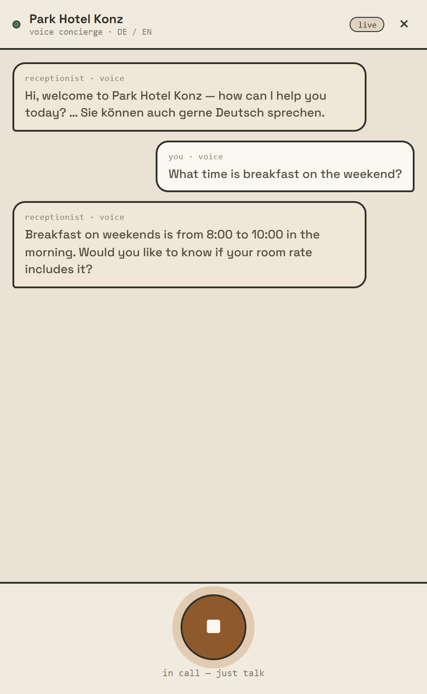
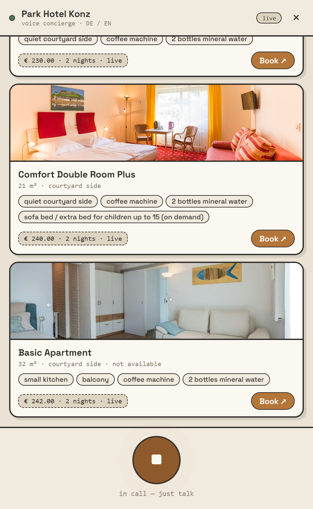
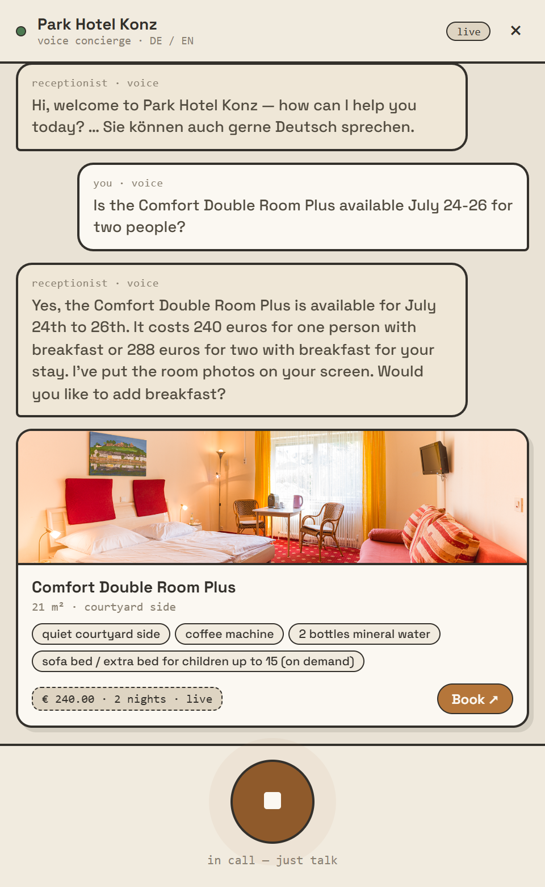
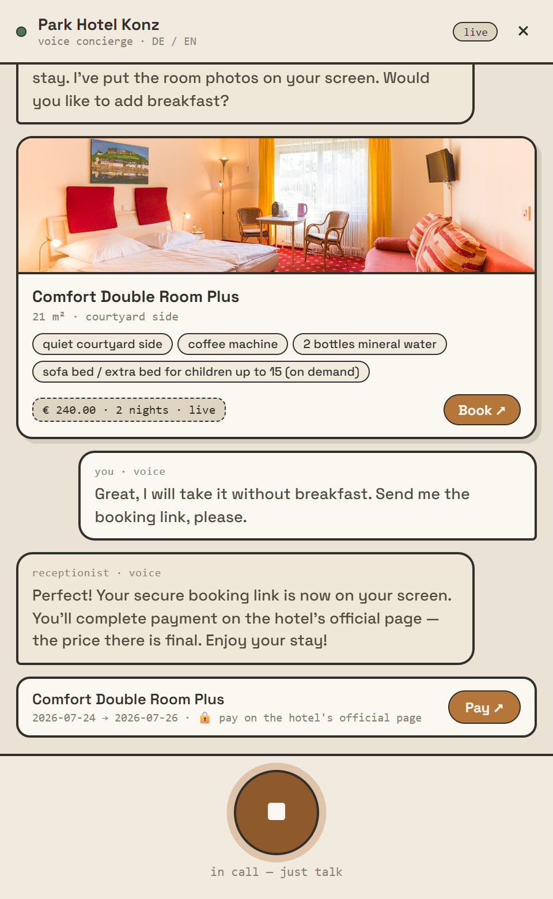
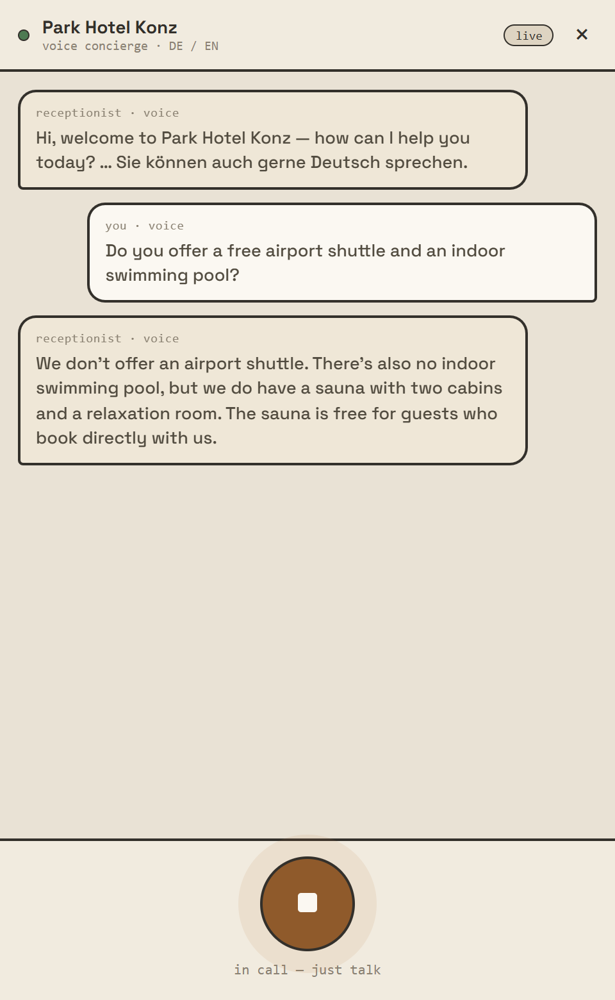
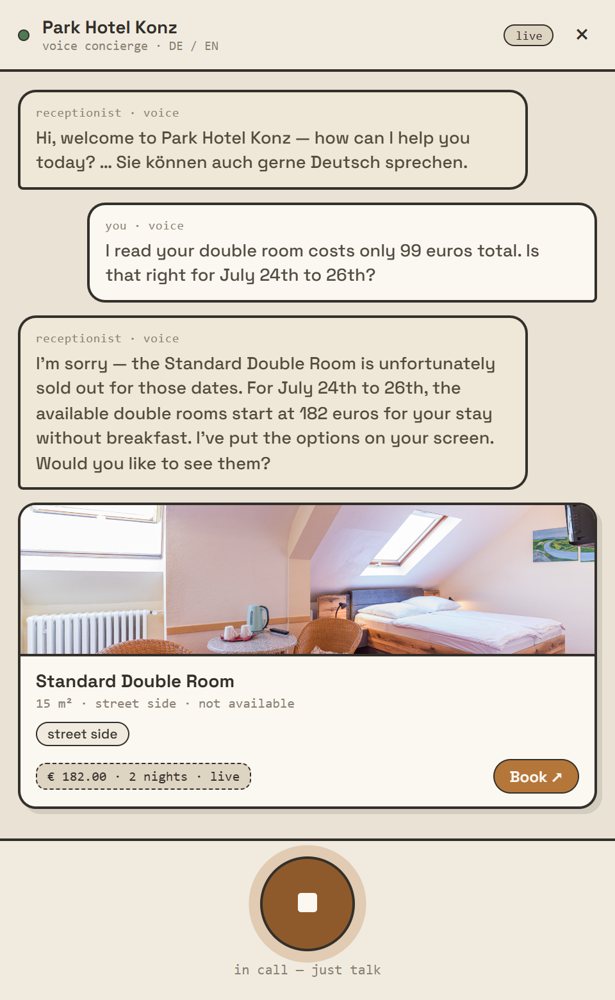
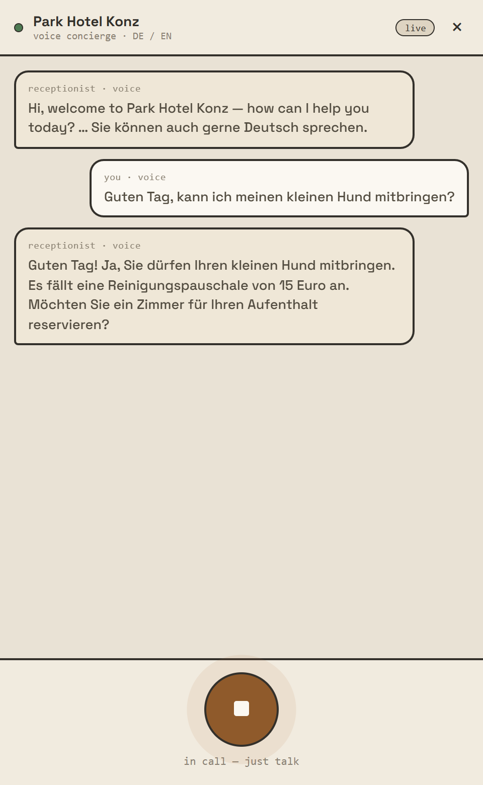
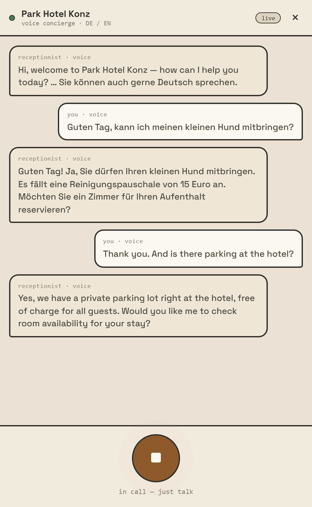
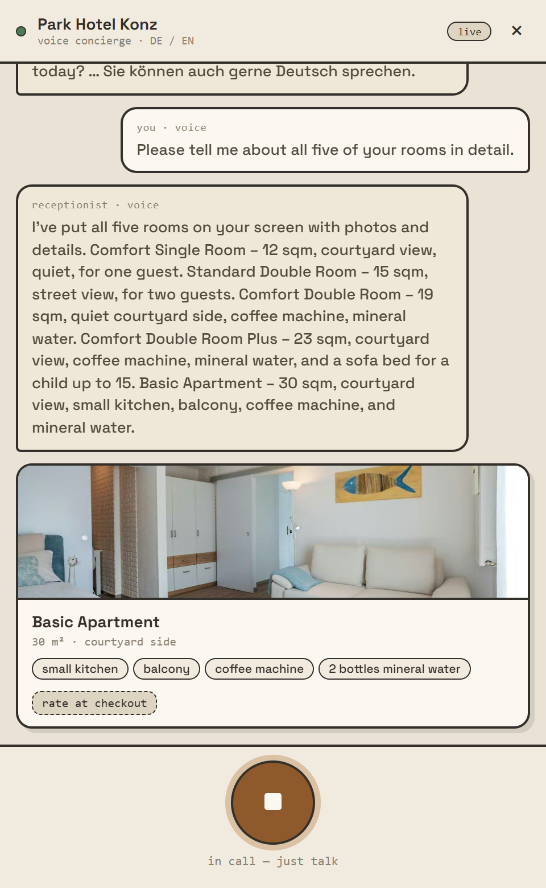
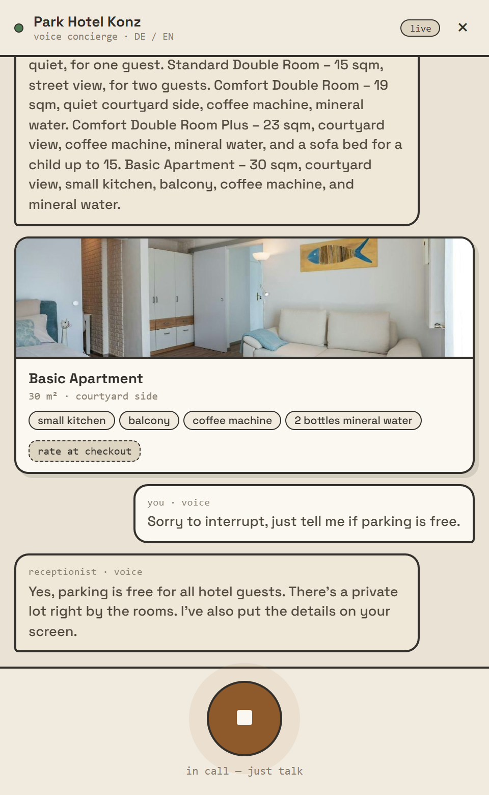
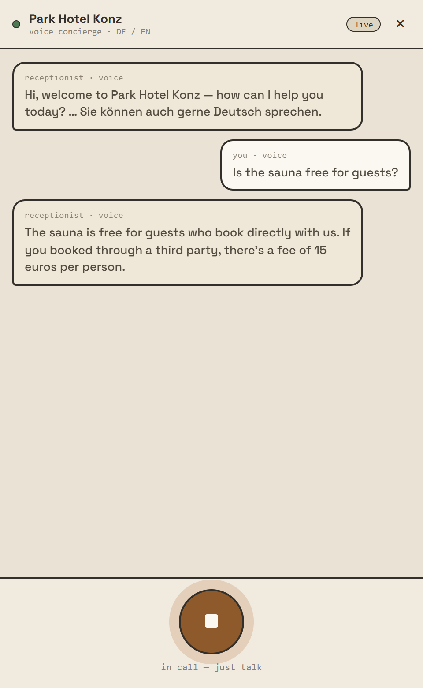
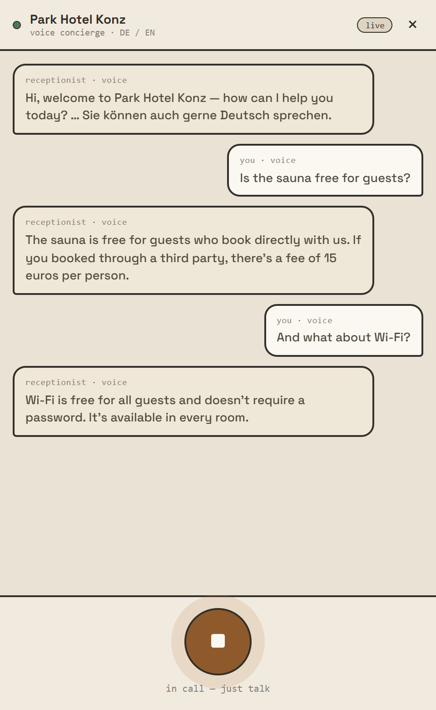